| Iron Fork |
|---|
Pourquoi avoir choisis l'impression 3D et de quoi avez vous besoin?
Nous avons choisi d'utiliser l'impression 3D, car elle est à faible coût et plutôt facile à utiliser pour un utilisateur lambda. En effet, pour l'impression de notre robot, nous avons utilisé l'équivalent de 2,5 bobines de PLA, soit 55 €. Pour l'impression de ses pièces, nous avons utilisé trois imprimantes 3D différentes :
- Wanhao D12 230 (230€ en 2025)
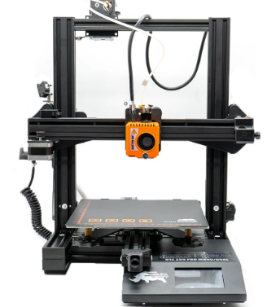
- Créality K1 max (969€ en 2025)
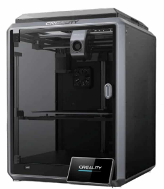
- BambuLab A1 combo (600€ en 2025)
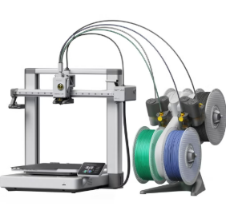
- Cura
- Bambu Studio
- Creality Print / Creality slicer
Comment faire / modifier / découper vos pièces 3D ?
Afin de réaliser les pièces 3D vous devrez vous munir d'un logiciel de CAO 3D. Sur internet, il existe une multitude de logciel 3D. Certain de ces logiciel sont gratuit et dautre payant. Voici une liste de quelque logiciel gratuit et payant :
- Créo (payant mais licence éductaion possible)
- Solidworks (payant mais licence éductaion possible)

- Fusion 360 (version payante et gratuite)
- DesignSpark (version payante et gratuite)
Pour modifier les pièces déjà existante, il vous suffit de télécharger le fichier .step que vous souhaitez modifier, et de l'ouvrir dans le logiecl 3D de votre choix. Une fois le fichier .step ouvert, il ne vous reste plus qu'à apporter les modifications que vous souhaiter. Voici les fichier .step :
| Fichier STEP |
|---|
Avant bras : |
|
Bras : 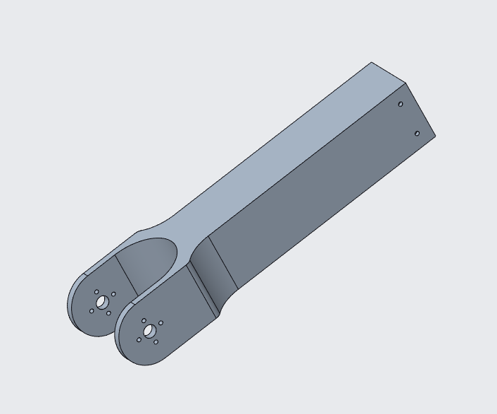 |
|
Base : 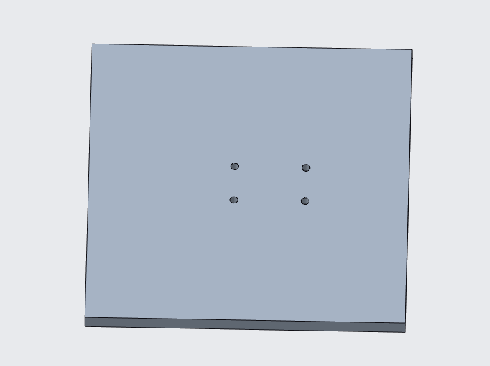 |
| Mur : 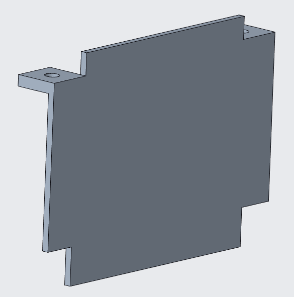 |
| Mur chargeur : 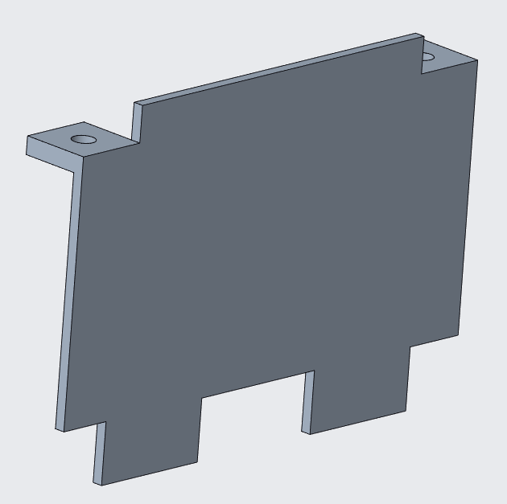 |
| Pièce base-barre : 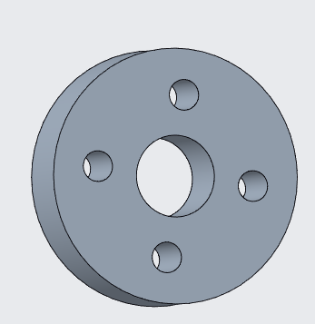 |
| Pince : 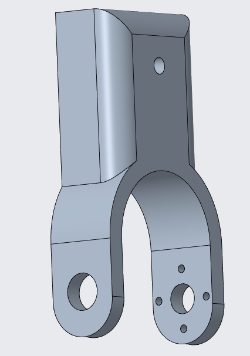 |
| Socle : 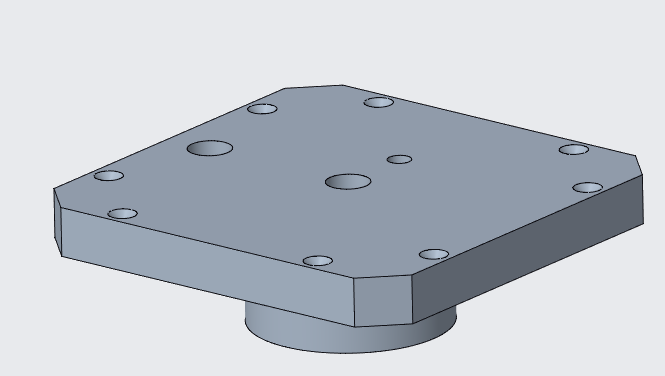 |
| Socle_pied : 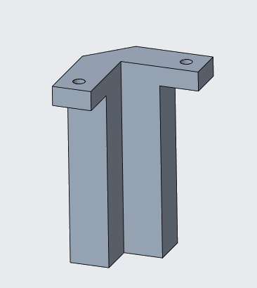 |
| Support moteur tourelle : 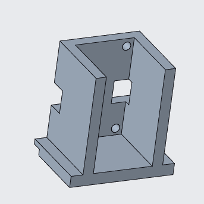 |
| Tourelle : 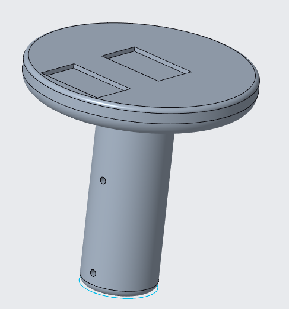 |
Pour imprimer les pièces, il faut passer par la phase de découpage / slicer qui découpera votre pièce en une multitude de couche. Pour se faire, il vous faudra utiliser un des logiciels énoncé au dessus comme cura, bambulab studio par exemple. Vous pouvez utiliser le logiciel de votre imprimante si elle en dispose d'un. Une fois que vous avez votre logiciel, il vous suffit de mettre votre pièce en format .stl et régler les paramètres de votre imprimante. Vous retrouverez les paramètres conseillés dans la partie suivante. Voici les pièces en .STL
| Fichier STL |
|---|
| Avant bras : |
| Bras : |
| Base : |
| Mur : |
| Mur chargeur : |
| Pièce base-barre : |
| Pince : |
| Socle : |
| Socle_pied : |
| Support moteur tourelle : |
| Tourelle : |
Quels sont les paramètres conseillés ?
Les paramètres conseillés sont :
| Pièce 3D | Paramètre |
|---|---|
| Avant bras : |
|
| Bras : |
|
| Base : |
|
| Mur : |
|
| Mur chargeur : |
|
| Pièce base-barre : |
|
| Pince : |
|
| Socle : |
|
| Socle_pied : |
|
| Support moteur tourelle : |
|
| Tourelle : |